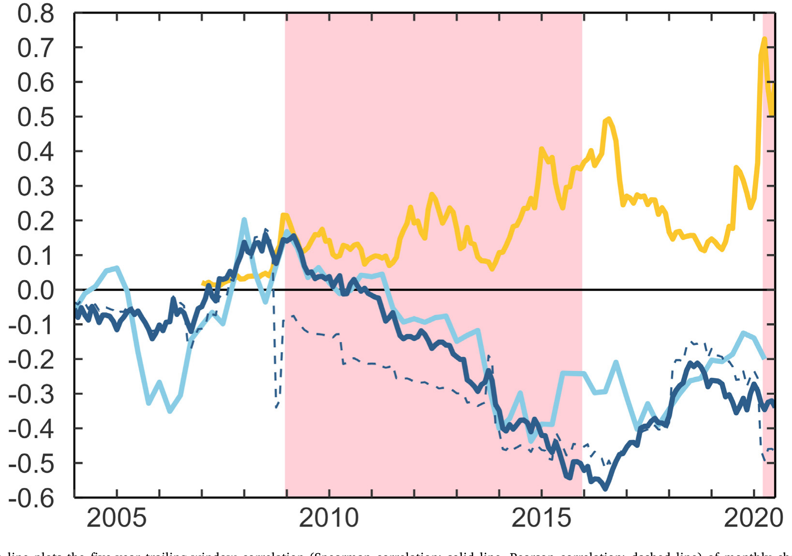
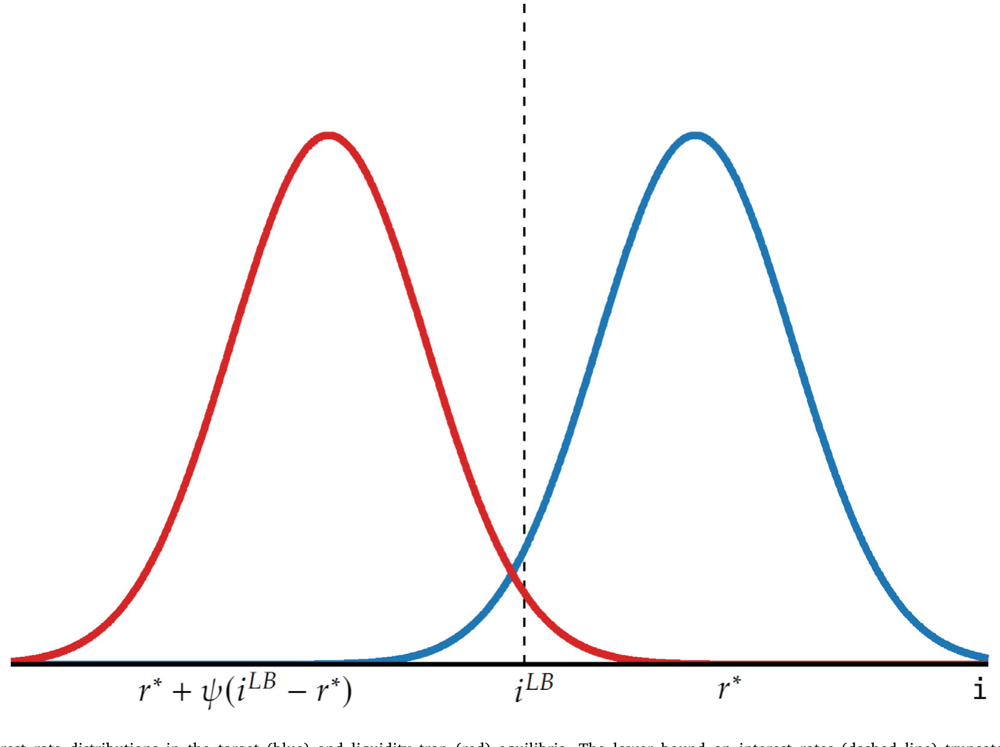
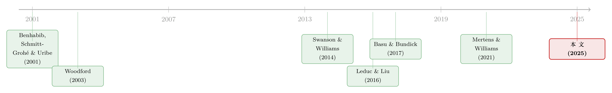

利率触到地板那天，不确定性开始压低通胀
本文读的是 Bok, Mertens & Williams (2025, Journal of Financial Economics)：过去二十多年里，「不确定性冲击」（用 VIX 变化度量）与「远期通胀预期」（用盈亏平衡通胀率度量）之间的相关性，从大约零一路滑到约 −0.5。作者用一个最标准的、带利率下界的新凯恩斯模型证明：只要自然利率 r* 趋势性下行、政策利率越来越频繁地贴着地板，这条相关性「转负」就是模型的必然预言——而不是什么需要额外故事的反常现象。
1 一个慢慢转负的相关性
先看一张图，再讲一个困惑。
在这个世纪初，如果你去算市场对「未来不确定性」的定价（比如 VIX 的月度变化）和市场对「长期通胀」的预期（比如远期盈亏平衡通胀率的月度变化）之间的相关性，你会得到一个接近零的数。直觉上这也说得通：不确定性是不确定性，通胀是通胀，两者各走各的路，没什么系统性的牵连。
但这条相关性没有停在零。它从 2000 年代中期开始往下走，越走越深，最后稳稳地停在了 −0.5 附近，并且在金融危机后的下界时期、以及新冠衰退之后，一次又一次地被压到很负的水平。换句话说：今天，每当市场的恐慌指数往上跳，长期通胀预期就往下掉。 不确定性，似乎变成了一种通缩信号。

Figure 1: The dark blue line plots the five-year trailing-window correlation (Spearman correlation: solid line, Pearson correlation: dashed line) of m
这是一件让央行睡不着觉的事。如果不确定性冲击如今对经济的压制效应比二十年前更强，那么货币政策面对的难题就比过去更棘手。于是一个自然的问题冒出来：这条相关性为什么会转负？是市场情绪变了，是风险溢价在作怪，还是有什么更结构性的东西在底层悄悄移动？
这篇论文的回答既简洁又有点出人意料：什么新故事都不需要。你只要承认两件已经被广泛接受的事实——名义利率有一个下界（lower bound），并且自然利率 r* 在过去二十年趋势性地往下掉——那么一个写在教科书里的标准新凯恩斯模型，就会自动吐出「相关性转负」这个预言。
2 这个事实，凭什么重要
为什么一条相关性的符号值得写一篇 JFE？
因为它把两个原本被分开研究的现象焊在了一起。一边是宏观学界争论了十几年的「利率下界」（lower bound）——当政策利率已经低到接近零、央行无法再大幅降息去对冲负向冲击时，经济会进入一种受约束的状态。另一边是资产定价里热门的「相关性变迁」：股债相关性、股票—石油相关性，这些金融市场里的相关性结构在过去二十年都发生了肉眼可见的漂移。
本文要说的是：通胀预期与不确定性之间这条相关性的漂移，正是利率下界在金融市场价格里留下的指纹。 它不是噪声，不是风险溢价的副产品，而是一个可以被结构模型精确预言、并能反过来用来度量「下界约束有多紧」的信号。
这条逻辑链的上游，是「自然利率长期下行」这件大事。关于利率二十年长跌如何重塑整个金融体系，可参见《利率长跌二十年，如何亲手喂大了影子银行》——本文相当于追问：同一场下行，在「通胀—不确定性」的相关性上又留下了什么。
接着，一个自然的问题是：凭什么「利率下界」会让不确定性变成通缩信号？要把这件事讲透，得把故事搬进模型。
3 把故事搬进模型：带下界的新凯恩斯
作者用的是最标准的三方程对数线性化新凯恩斯模型（New Keynesian model），照搬自 Woodford (2003)，唯一的改动是给名义利率加了一个下界。为了把推导做到解析可解，模型里只保留了需求冲击（demand shocks），而且假设它在时间上独立同分布。
菲利普斯曲线（Phillips curve）描述通胀 \(\pi_t\) 的演化：
$$\pi_t = \kappa x_t + \beta\, \mathbb{E}_t \pi_{t+1}$$
其中 \(\kappa>0\) 是通胀对产出缺口 \(x_t\) 的敏感度，\(\beta\in(0,1)\) 是贴现因子。
IS 关系（IS relation）描述产出缺口 \(x_t\) 的行为：
$$x_t = \epsilon_t - \alpha\big(i_t - \mathbb{E}_t \pi_{t+1} - r^*\big) + \mathbb{E}_t x_{t+1}$$
这里 \(\alpha>0\) 衡量产出缺口对「实际利率偏离自然利率 \(r^*\)」的反应。需求冲击写成 \(\epsilon_t = \bar\epsilon + \nu_t\)，其中 \(\nu_t\) 均值为零、独立同分布，密度函数 \(g(\cdot)\)、累积分布 \(G(\cdot)\)。注意：这里的 \(\bar\epsilon\) 和 \(r^*\) 是模型里我们要做比较静态的两个旋钮——r* 的趋势下行，正是后面整个故事的扳机。
央行在相机抉择（discretion）下最优地设定名义利率 \(i_t\)，但受下界 \(i_{LB}\) 约束，且 \(i_{LB} $$\min_{i_t \ge i_{LB}} \mathcal{L} = \min_{i_t \ge i_{LB}} (1-\beta)\,\mathbb{E}_0 \sum_{t=0}^{\infty} \beta^t \big(\pi_t^2 + \lambda x_t^2\big)$$ \(\lambda\ge 0\) 是央行对产出缺口相对于通胀的权重。 然后，关键的记号出场了。作者定义一个影子利率（shadow rate）\(\mathtt{i}_t\)——也就是「假如没有下界约束，央行本来想设的那个利率」： $$\mathtt{i}_t = \theta + r^* + \psi\, \mathbb{E}\pi_{t+1} + \frac{1}{\alpha}\epsilon_t, \qquad \psi>1$$ 参数 \(\theta\) 后面用来切换不同的政策框架（比如平均通胀目标制），先放着不管。真正的政策利率，是影子利率与下界之间「取大」： $$i_t = \max\{\mathtt{i}_t,\, i_{LB}\} = \mathtt{i}_t + i\Delta_t \tag{4}$$ 最后这一项 \(i\Delta_t = i_t - \mathtt{i}_t\) 叫利率楔子（interest rate wedge）：政策利率减影子利率。它总是非负的——当影子利率高于下界时，央行随心所欲，楔子为零；当影子利率跌穿下界时，央行被按在地板上，楔子等于「本想降而没能降的那部分」，是正的。 整个模型的悬念，就压缩在这个楔子上：经济在通胀和利率上偏离常态多少，全看这个楔子的期望值 \(\mathbb{E}\,i\Delta\) 有多大。 那么，\(\mathbb{E}\,i\Delta\) 到底由什么决定？ 这是全文最漂亮、也最关键的一步。 楔子只在影子利率跌穿下界时才非零，也就是只在需求冲击的扰动项 \(\nu_t\) 低于某个临界值 \(\bar\nu_{LB}\) 时才被激活。低于临界值时，楔子大小为 \(i_{LB}-\mathtt{i}_t = \frac{1}{\alpha}(\bar\nu_{LB}-\nu_t)\)，随 \(\nu_t\) 下跌而线性变大；高于临界值时，楔子为零。于是期望楔子就是对「临界值以下那条尾巴」的积分： 这里的 \(\mathcal{G}\) 是作者命名的超累积分布函数（super-cumulative distribution function）：它满足 \(\mathcal{G}'(\nu)=G(\nu)\)，也就是对累积分布再积一次分。它有几个好用的性质：\(\bar\nu_{LB}\to-\infty\) 时趋于零、\(\bar\nu_{LB}\to\infty\) 时趋于无穷；它的二阶导是密度函数，所以非负、且 \(\mathcal{G}\) 是凸的；它只由分布形状决定，不依赖其他参数。对正态分布，它有显式解： $$\mathcal{G}_{\text{norm}}(\bar\nu_{LB}) = \bar\nu_{LB}\,\Phi\!\Big(\frac{\bar\nu_{LB}}{\sigma}\Big) + \sigma^2\,\phi\!\Big(\frac{\bar\nu_{LB}}{\sigma}\Big) \tag{10}$$ 而临界值本身由下式隐式确定： $$\bar\nu_{LB} = \alpha\Big(i_{LB}-\theta-r^* + \frac{\psi}{\psi-1}(\mathbb{E}\,i\Delta + \theta)\Big) - \bar\epsilon \tag{9}$$ 为什么说这一步关键？因为它把「不确定性」翻译进了模型。\(\sigma\)——需求冲击的离散程度——正是不确定性的度量。看 $(10)$：\(\mathcal{G}\) 随 \(\sigma\) 增大而上升。也就是说，不确定性越大，期望楔子越大，央行平均而言被下界约束得越死。 而被约束，意味着该降息时降不下去，负向冲击得不到对冲，通胀就会系统性地低于目标。通过前瞻性的菲利普斯曲线，今天的通胀预期就被压低了。 这就是「不确定性压低通胀」的机制内核：不是情绪，不是溢价，而是一个被下界截断的分布，在期望上漏掉了下半边。 但真正让这篇论文有张力的一步，是下界制造了两个均衡。 把 \(\mathbb{E}\,i\Delta = \frac{1}{\alpha}\mathcal{G}(\bar\nu_{LB})\) 和临界值方程 $(9)$ 联立，本质上是在解一个不动点。\(\mathcal{G}\) 是凸的，而 $(9)$ 是线性的，凸曲线与直线可以有两个交点、一个切点、或零个交点。作者用 Lemma 1 把这件事说死了： Lemma 1：取决于不确定性的大小，这个经济中存在两个、一个或零个均衡。当存在两个不同均衡时，有一个门槛 \(\frac{\psi-1}{\psi}\)，使得下界绑定概率在目标均衡（target equilibrium）中始终低于该门槛，在流动性陷阱均衡（liquidity trap equilibrium）中始终高于该门槛。 两个均衡的差别，就在「下界多频繁地绑定」。下界绑定的概率是 $$P_{LB} = G(\bar\nu_{LB}) = \int_{-\infty}^{\bar\nu_{LB}} g(\nu)\, d\nu \tag{12}$$ 在目标均衡里，下界很少绑定，央行大体上自由，能把通胀稳在目标附近。此时增大不确定性，会让「政策被约束」的状态空间区域变大——这是个不对称的约束（央行降不下去、却总能升上来），结果就是通胀预期和利率预期的无条件均值双双被压低。 在流动性陷阱均衡里，下界几乎总在绑定（确定性稳态下利率永远卡在地板上）。此时增大不确定性，反而会制造出「冲击大到把影子利率顶上下界以上、央行重获自由」的情形，于是约束区域收缩，通胀预期和利率预期的均值反而上升。比较静态的方向，正好相反。  Figure 3: Shadow interest rate distributions in the target (blue) and liquidity trap (red) equilibria. The lower bound on interest rates (dashed line) 这就把全文的预言钉死了：「不确定性—通胀」相关性的符号，取决于经济处在哪个均衡。 如果美国处在目标均衡，那么随着 作者的实证设计朴素而克制，没有花哨的工具变量，靠的是「模型预言的方向 + 滚动相关性的时序」。 数据。 不确定性冲击用 VIX 的变化度量；长期通胀预期用市场隐含的盈亏平衡通胀率（break-even inflation, BEI）——名义国债收益率减去通胀保值国债（TIPS）收益率——具体取「五年后起算、未来五年」的远期 ( 第一个关键事实。 VIX 与 识别这件事是不是下界干的。 作者把「下界绑定概率」请进来当解释变量：用利率上限期权（caps）隐含的、十年后 3 个月 LIBOR 触零的概率（取自 Center for Monetary Research, 2024）。图 1 里这条黄线与基准相关性（深蓝线）的相关系数是 −0.68：下界风险越高的时期，相关性越负。更进一步，把「通胀预期—不确定性」相关性回归到下界绑定概率上，得到回归系数 −1.07，Newey–West 标准误 0.54，在 5% 水平上显著。 这里要诚实地点出作者自己承认的一个 caveat：为了保住解析可解性，模型并不显式地建模相关性的时间变动。作者研究的是「当 稳健性。 结果在以下变化下都站得住：把期限溢价（term premia）剔除后再算；用专业预测者调查（SPF）的中位数 10 年 CPI 通胀预期替代 BEI；用 Ludvigson, Ma & Ng (2021) 的金融经济不确定性指标、或 Baker, Bloom & Davis (2016) 的经济政策不确定性指数替代 VIX。换了度量，故事不变。 最后，作者把模型用于政策含义：在目标均衡里，宏观不确定性越大，平均通胀目标制（average-inflation targeting）相对于标准通胀目标制的好处越大——通过下调政策规则的截距（即把 \(\theta\) 设为负），让通胀在政策不受约束时主动超调，去弥补下界绑定时的通胀缺口。 这条研究是三股水流的汇合处。 第一股，是把「利率下界」塞进新凯恩斯经济的传统。从 Eggertsson & Woodford (2003) 到 Cochrane (2018)，人们反复推演下界如何改变货币政策的逻辑；而其中专门处理「下界带来均衡多重性」的，是 Benhabib, Schmitt-Grohé & Uribe (2001) 那篇著名的《泰勒规则之险》——本文的两个均衡，正是这一支血脉的后裔。更近的 Swanson & Williams (2014) 与 Mertens & Williams (2021) 则开创了「用金融市场价格去度量下界约束有多紧」的做法，本文的实证骨架直接承自后者。 第二股，是研究金融市场相关性变迁、并把它们与宏观联系起来的文献。Baele, Bekaert & Inghelbrecht (2010) 记录股债相关性的漂移，Campbell, Pflueger & Viceira (2020) 给它找宏观驱动；而 Datta et al. (2021) 把下界与「股票—石油」相关性的变迁挂上钩——本文做的是同一类事，只不过对象换成了「不确定性—通胀」。 第三股，是关于不确定性冲击的大潮。度量上的奠基之作是 Jurado, Ludvigson & Ng (2015) 与 Baker, Bloom & Davis (2016)；Leduc & Liu (2016) 论证「不确定性冲击本质是总需求冲击」；而把下界纳入考量的，有 Basu & Bundick (2017) 和 Nakata (2017)。  本文的位置，是这三股水流的交点：它用一个最朴素的带下界新凯恩斯模型，把「不确定性 → 下界绑定概率 → 平均通胀缺口 → 通胀预期—不确定性相关性」这条链条解析地走通，再用美国数据验证了它的方向。贡献不在于模型有多复杂，恰恰在于它有多简单。 Q：相关性转负，会不会只是风险溢价（term premium）在作怪，而不是真实通胀预期？ 作者专门处理了这个担忧。一是把期限溢价剔除后重算，结果不变；二是用 SPF 的调查通胀预期（不含市场风险溢价）替代 BEI，两条序列贴合得很紧，暗示它们背后有共同的结构性原因，而非溢价噪声。所以「纯溢价」的解释被基本排除。 Q：为什么用「五年后起算的未来五年」（ 远期是为了滤掉短期的转移动态（transition dynamics）。作者刻意盯着「十年开外」的下界风险与远期预期，正是要确保结果反映的是稳态层面的均衡选择，而不是某次降息周期的临时波动——这与模型里 i.i.d. 冲击、无转移动态的设定相洽。 Q：模型里只有需求冲击，没有供给冲击，会不会太简化以至于结论不可信？ 这是为解析可解付出的代价。作者说明加入供给侧冲击会得到一致的结果，只是把推导写得更繁琐；它本质上是 Mertens & Williams (2021) 那个更完整模型的简化版。代价是：2021–2022 那种供给驱动的高通胀，本框架天然解释不了——而样本停在 2020 年 7 月，某种程度上也回避了这一段。 Q：「目标均衡」和「流动性陷阱均衡」的区分，听起来像事后贴标签，怎么知道美国在哪个？ 这正是实证那一步的意义。两个均衡对「相关性符号」给出方向相反的预言：目标均衡预言转负，流动性陷阱预言转正。数据里相关性转负、且与下界概率负相关（−0.68），所以证据指向美国处在目标均衡——这与 Mertens & Williams (2021) 的独立证据一致。换句话说，均衡的选择不是假设，而是被数据挑出来的。 Q：这套逻辑能不能反过来用，当成度量「下界约束有多紧」的温度计？ 这恰恰是本文方法论上的卖点。既然相关性符号与幅度由下界绑定概率驱动，那么观测到的相关性就成了一个市场隐含的「下界紧度」读数，而且是高频、连续、不依赖宏观模型估计的。这把抽象的「下界风险」变成了可以从国债与期权价格里直接读出的东西。 Q：样本停在 2020 年 7 月，错过了后疫情的通胀大爆发，结论还成立吗？ 作者的框架是关于「低利率、下界频繁绑定」环境下的相关性，停在平均通胀目标框架宣布之前是为了保持政策规则的一致性。后疫情的高通胀由供给冲击主导，已经超出本模型的解释范围，所以严格说本文的结论限定在「下界绑定时代」。这既是诚实的边界，也留下了一个开放问题：随着 1. 把同一套「超累积」逻辑搬到公司债信用利差上 【经济故事】本文证明下界把「不确定性」翻译成了通胀的通缩信号。一个自然的延伸是：在下界绑定、央行无力对冲负向冲击的环境里，企业违约的尾部风险是否被系统性放大？如果是，那么不确定性冲击与信用利差的相关性，也应当随下界风险上升而变陡。 【可行性】中。信用利差数据（ 2. 外资持有人结构与通胀—不确定性相关性的传导 【经济故事】美国长期国债与 TIPS 的边际定价者里，外国官方与私人投资者占比很高。如果不同投资者群体对「不确定性」的需求弹性不同，那么 BEI 里隐含的相关性，可能部分反映的是持有人结构的变化，而非纯粹的下界机制。 【可行性】中偏低。 3. 跨国比较：自然利率下行不同步，相关性转负的时点是否也错开？ 【经济故事】本文的扳机是 【可行性】高。多国都有通胀挂钩债券与本地波动率指数，Holston, Laubach & Williams (2017) 提供了可比的多国 4. 平均通胀目标制的事后检验 【经济故事】本文预言：不确定性越大，平均通胀目标制（AIT）相对标准通胀目标制的好处越大。美联储 2020 年 8 月恰好切换到 AIT——这提供了一个准自然实验。AIT 之后，「不确定性—通胀预期」相关性是否如模型所料地回升（因为 \(\theta<0\) 让通胀主动超调）？ 【可行性】中。事件时点清晰，但 AIT 与后疫情供给冲击、加息周期高度缠绕，很难把 AIT 的纯效应从其他冲击里剥出来。可作为一个描述性的「政策前后对比」，但要做成干净的因果识别，难度高。 这篇论文最让我欣赏的，是它的克制。它没有去发明一个新的不确定性度量，也没有堆一个十几状态变量的 DSGE，而是用最标准的三方程模型，外加一个利率下界，就把一条让人困惑的相关性漂移解析地讲清楚了。那个「超累积分布函数」是真正优雅的一笔——它把「下界截断了冲击分布的下半边」这件事，压缩成了一个凸函数，并由此自然长出了两个均衡。这种「用最少的零件解释最多的现象」，是好的宏观—金融工作的标志。 但我对识别有两点保留。其一，如作者自己坦承，模型并不内生地产生「时变相关性」，整套检验靠的是「比较静态方向 + 时序吻合 + 下界概率回归」的三重旁证，而不是一个外生冲击驱动的因果链—— 我接下来最想看到的，是把这套「相关性即下界温度计」的思路推到跨国与信用市场：如果日本、欧元区相关性转负的时点真的咬合各自触及下界的时点，这个机制的可信度会陡然上一个台阶。4 核心一步：超累积分布函数
5 两个均衡：目标 vs 流动性陷阱
r* 下行、下界绑定风险上升，这条相关性就应当转负。如果处在流动性陷阱均衡，方向就该是正的。数据站在哪一边？这就轮到实证登场了。6 回到数据：识别策略与结果
5y5y forward)，以聚焦长期。日度序列取自 Bloomberg，转成月度均值的变化，再算五年滚动窗口的相关性。由于 TIPS 1999 年才推出，五年滚动相关性从 2004 年 1 月才开始；样本终止于 2020 年 7 月，刻意停在美联储宣布平均通胀目标框架之前。相关性主用 Spearman（秩相关），因为它对离群值更稳健。5y5y BEI 变化的相关性，从接近零一路降到约 −0.5，并在下界时期持续为很负的水平。而且，模型不仅预言通胀预期，还预言利率预期应当对称地转负——数据里，VIX 与远期利率预期的相关性同样从接近零跌到约 −0.5。两条线一起转负，与「目标均衡 + r* 下行」的图景高度一致。r* 发生外生移动时，预期对不确定性的导数如何变化」，再用这个比较静态去对照数据里相关性的漂移。所以这是一个「定性方向一致」的检验，不是一个把相关性内生地跑出来的结构估计。识别的说服力，主要来自「方向 + 时序 + 下界概率」的三重吻合，而非一个外生工具。7 文献脉络
8 评论与延伸（Q&A + 研究方向）
(a) 几个可能的疑问
5y5y forward）这种远期，而不是短期通胀预期？
r* 可能回升、下界风险下降，这条相关性是否会重新爬回零附近？(b) 几个可能的研究问题与提案
ICE BofA、TRACE）与 VIX 都是现成的，滚动相关性容易算；难点在于把「下界绑定概率」干净地映射到信用市场的尾部定价上，需要一个把宏观下界与企业现金流尾部连起来的结构桥。doable，但识别会比本文更吃力。TIC 数据能给出外资持有的总量与期限分布，但要把它和「5y5y BEI 的高频相关性」对上，频率与颗粒度都不匹配，识别外资的因果作用很难。更现实的做法是把它当作本文相关性序列的一个控制变量，检验下界机制在剔除持有人结构后是否仍然成立。r* 下行 + 下界绑定。日本、欧元区、英国触及下界的时点与深度各不相同（日本最早、欧元区其次）。如果机制为真，那么各国「不确定性—通胀预期」相关性转负的时点，应当与各自触及下界的时点一一对应——这是一个强得多的跨国安慰剂检验。r* 估计。数据齐备，识别靠「各国下界时点的错位」，是本文最自然、也最 doable 的延伸。评论与延伸：我的判断
r* 的下行本身是否外生，论文也明确表示不予处理。这意味着结论的说服力是「高度一致」而非「干净识别」。其二，样本停在 2020 年 7 月，把后疫情那段供给驱动的高通胀完全挡在门外。这在内部逻辑上无可指摘（模型本就只有需求冲击），但也让人忍不住想问：当 r* 可能掉头回升、下界风险消退时，这条相关性会不会优雅地爬回零？那才是对机制最严苛的样本外检验。参考文献